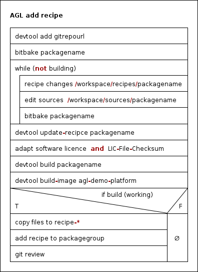

For adding a custom linux software/service like cannelloni you have to do the following steps:
-
Add repo via devtool (gitrepo stands for the url)
2. Try to bitbake, if it is working go to step 3devtool add gitrepoIf it is not working you can do (repeating) following steps until it is workingbitbake packagename (gitrepo name)- change/modify the recipe in /workspace/recipe/packagename
- change/modify the sources in /workspace/sources/packagename
- bitbake packagename
Now update the recipe, if you do this the first time you have to adapt the license and the LIC-File-Checksum
devtool update-recipce packagename -
Build the recipe and image with devtool
devtool build packagename devtool build-image agl-demo-platformIf that is working you could add it to git/gerrit. You have to add your recipe to a layer.
- Copy files to the recipe
- add recipe to a packagegroup
-
Git
git review git review -s git remote -v update